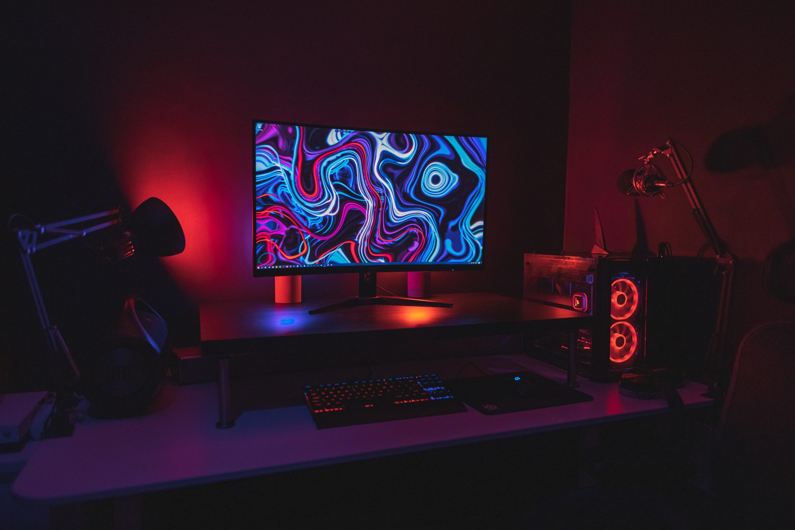

A Gaming OA investe fortemente em pesquisa e desenvolvimento para garantir que seus produtos estejam sempre na vanguarda da tecnologia. Além disso, a empresa mantém um relacionamento próximo com seus clientes, ouvindo suas opiniões e sugestões para melhorar ainda mais seus produtos e serviços.
Entre os produtos mais populares da Gaming OA estão seus consoles de jogos, que oferecem gráficos de alta definição e uma experiência de jogo imersiva e envolvente. Além disso, a empresa também produz jogos para PC, smartphones e tablets, abrangendo uma ampla gama de plataformas.
GAMING e o meio ambiente
Também nos preocupamos com questões sociais e ambientais, buscando sempre agir de forma responsável e sustentável em todas as suas operações. A empresa mantém programas de reciclagem e descarte adequado de seus produtos eletrônicos, além de investir em projetos sociais para ajudar comunidades carentes.
Em resumo, a Gaming OA se destaca por sua qualidade, inovação e compromisso com a responsabilidade social e ambiental. Com uma equipe talentosa e apaixonada pelo que faz, a empresa está sempre pronta para surpreender e encantar seus clientes com produtos e serviços excepcionais.